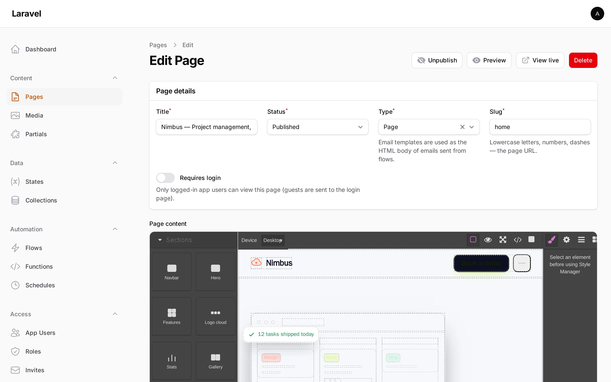

Pages & components
A page is a row in the pages table. The GrapesJS visual editor stores its canonical state in project_data and a compiled snapshot in html + css; the public render route assembles those plus per-page CSS/JS, a reactive Alpine store and a small flow runtime into a standalone HTML document.

The Page model
src/Models/Page.php. Route key is slug; soft-deletes enabled.
| Column | Type | Notes |
|---|---|---|
title |
string | |
slug |
string | Unique, route key. Pattern ^[a-z0-9\-_]+$ |
status |
PageStatus enum |
draft | published |
kind |
string | page (default) or email (an email template) |
requires_auth |
bool | Gate the page behind the pb guard |
project_data |
array (JSON) | GrapesJS canonical editor state |
html |
string | Compiled markup snapshot |
css |
string | Compiled stylesheet snapshot |
custom_css |
string | Per-page CSS (Advanced section) |
custom_js |
string | Per-page JS (Advanced section) |
meta |
array (JSON) | SEO: title, description, og_image, canonical, noindex |
published_at |
datetime | Set automatically when status is published |
Scopes: published(), pages(), emailTemplates(). Helpers: isPublished(), isEmailTemplate(). Saving/deleting a page busts the render cache for its slug (and the old slug if it changed).
PageStatus (src/Enums/PageStatus.php): Draft = 'draft', Published = 'published', each with label() and color().
Editing in Filament
PageResource form sections:
- Page details —
title(auto-fillsslugon create),status,kind,slug,requires_auth. - Builder — the GrapesJS field (
builder), holding{ project_data, html, css }.PageDataMapper::merge()/split()map between this form shape and the DB columns. - SEO (collapsed) — the
meta.*keys. - Advanced (collapsed) —
custom_cssandcustom_js(Ace code fields).
The list view offers Duplicate (clones to a Draft with a random slug suffix), View live (for published pages when the render route is enabled), and delete.
The block vocabulary
src/Blocks/BlockVocabulary.php is the single source of truth for the editor's blocks and the AI's allowed component keys. Blocks come in families; each block has a key, label, category, template (HTML), description and an icon (src/Blocks/SectionBlock.php is the value object).
Section blocks wrap their markup in <section data-pb-block="{key}"> with stable pb-{key}__* classes. The data-pb-block attribute is the convention that lets dragged or AI-generated markup import as a labelled, editable GrapesJS component — and it is the vocabulary the AI is constrained to (BlockVocabulary::keys() returns the section keys only).
Sections (category Sections) — the AI vocabulary
navbar, hero, features, logos, stats, gallery, pricing, testimonial, faq, team, cta, contact, footer.
Basics (category Basic) — no data-pb-block
text, heading, image, button, columns-2, columns-3, spacer, divider.
Shapes (category Shapes)
shape-wave, shape-slant, shape-tilt, shape-curve — full-width SVG section dividers.
Components (category Components)
card, banner, modal, drawer, tabs, accordion, tooltip, dropdown_menu. These are owner-authored, trusted interactive blocks — because the author wrote them (not the AI), they may carry executable Alpine directives (x-data, @click, x-show, x-transition, etc.) for local UI state. Overlay panels use x-cloak so they stay hidden in the editor canvas (where Alpine does not run).
Forms (category Forms)
text_input, email_input, textarea, select, checkbox, radio_group, submit_button, form. Each input is a real control with a stable name so the runtime's collectFormInput() picks it up.
Data (category Data)
data_table and list — render rows reactively. data_table carries x-data="pbTable('<collection>')" and fetches GET {api}/{collection} on init; list repeats over a $store.app array. (See pbTable below.)
The full HTML template for every block lives in
BlockVocabulary.php.BlockVocabulary::all()returns every family;BlockVocabulary::toArray()is the serialized form handed to the GrapesJS block manager.
The render route
When routes.render_enabled is on (default), the package serves:
GET /{render_prefix}/{slug}→RenderPageController(default prefixp, so/p/{slug}).slugmatches[A-Za-z0-9\-_]+.GET /{render_prefix}/→ the configured home page (RenderPageController@home).
RenderPageController resolves the page via the published() scope, returns 404 for unknown/unpublished slugs, and — if requires_auth is true and auth.enabled is true — redirects unauthenticated visitors to the login path (with intended). See Authentication & permissions.
Home page
The home page is not chosen in config — it is the home_page setting (a page slug), chosen on the Settings admin screen. RenderPageController@home reads it from the Settings service and 404s if unset.
To also serve the home page at the site root /, enable routes.home_at_root (AI_PAGE_BUILDER_HOME_AT_ROOT=true). This only takes effect if the host app has no / route of its own (Laravel matches the first-registered route). If your app keeps a / route, point it at the controller yourself:
use Andre\AiPageBuilder\Http\Controllers\RenderPageController;
Route::get('/', [RenderPageController::class, 'home']);Caching
PageRenderer caches the assembled HTML per slug. Cache key prefix ai-page-builder:rendered:, TTL cache.ttl (default 3600s; 0 disables), store cache.store. The cache is busted automatically when a page is saved or deleted.
Per-page CSS / JS
custom_css is injected into the page <head>; custom_js is injected at the end of <body>, after the DOM, the flow runtime and Alpine — so it can rely on window.Alpine and $store.app being present.
Declarative data binding (Alpine)
The rendered page loads Alpine and registers a global store named app, seeded from your States: Alpine.store('app', { ...window.__pbState }). Bind page content to state with declarative directives over $store.app.<state>:
| Directive | Use |
|---|---|
x-text="$store.app.greeting" |
Render a state value as text |
x-show="$store.app.isOpen" |
Toggle visibility |
x-model="$store.app.search" |
Two-way bind an input |
x-for="item in $store.app.items" |
Repeat over a state array |
AI-authored pages are restricted to these declarative directives. The
HtmlSanitizerstrips executable directives (@click,x-on:*,x-init,x-effect,x-html) and<script>from AI HTML, but keepsx-data,x-show,x-text,x-model,x-for,x-bind:/:,x-cloak,x-transition*and thedata-pb-*attributes. Owner-authored Component blocks are trusted and bypass the sanitizer.
The current end-user is fetched client-side from GET /pb-auth/me and placed at $store.app.$user — used to drive component visibility (see below).
Runtime data attributes
The bundled flow-runtime.blade.php wires up these attributes on the published page:
| Attribute | Effect |
|---|---|
data-pb-block="{key}" |
Marks a section block (editor + validator convention) |
data-pb-flow="{slug}" |
Run a flow when the element is clicked/submitted |
data-pb-flow-event="click|submit|…" |
Which event triggers the flow |
data-pb-flow-input='{"k":"v"}' |
Explicit input merged with nearest-form data |
data-pb-record="{collection}" |
A <form> that creates a record in a collection on submit |
data-pb-page="{slug}" |
Navigate to another page on click |
data-pb-auth |
Hide the element unless an end-user is logged in |
data-pb-roles="a,b" |
Hide unless the user has one of those role slugs (admins always pass) |
Flow runs POST to /{flow_prefix}/{slug} with { "input": {...} } and apply the returned actions[] (setHtml, setText, notify, redirect, addClass, removeClass, setState, setStates). See Flows.
Data tables with pbTable
For a data-bound table, give the root x-data="pbTable('<collection key>')". On init it fetches GET {api_prefix}/{collection} and exposes:
rows— the records (response.data)loading/error— request state
Then repeat with <template x-for="row in rows" :key="row.id"> and bind cells with x-text="row.<field>". The data_table block ships this scaffold plus sample rows (hidden with x-show="false") so the editor canvas shows something while Alpine is inert.
Next: Collections & data.